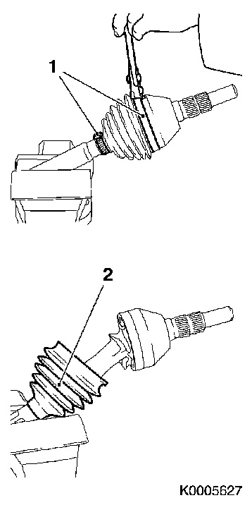
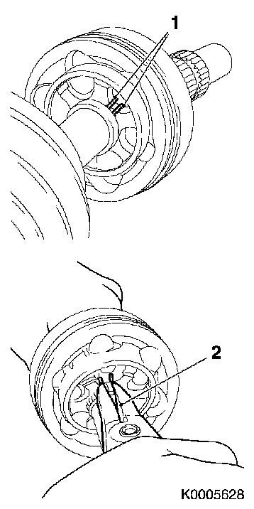
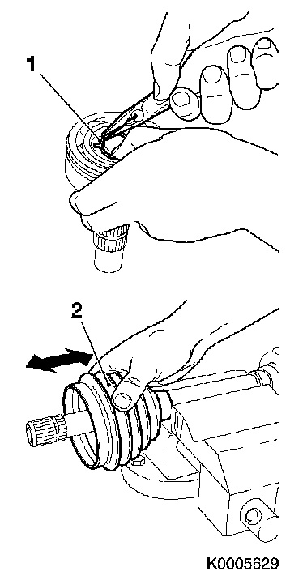
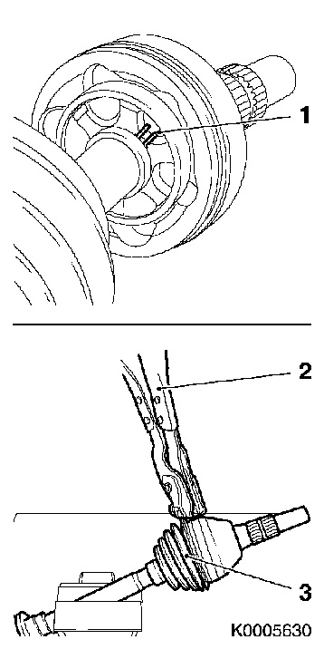

Drive Shaft Rubber Gaiter (Wheel Side), Replace
Drive shaft rubber gaiter (wheel side), replaceTo remove
1. Remove the relevant drive shaft. see Drive shafts.

2. Clamp the drive shaft in a vice.
Use protective vice clamps.
3. Remove the clips of the rubber gaiter (1).
Use a suitable tool.
Note: It is not possible to remove the clips without destroying them.
4. Slide the rubber gaiter (2) rearwards on the drive shaft.
5. Clean the drive shaft universal joint.
Clean the drive shaft universal joint thoroughly so that the circlip (1) is easily accessible.

6. Remove the universal joint from the drive shaft.
Undo the circlip (1) using circlip pliers (2).
Remove the universal joint from the drive shaft (arrow).
7. Remove the circlip (1) from the universal joint.

8. Remove the rubber gaiter (2) from the drive shaft.
To fit
9. Fit a new circlip (1) in the joint.
Note: Make sure the circlip is properly positioned.

10. Slide a new rubber gaiter (2) with new clip on the drive shaft.
11. Slide the universal joint on the drive shaft.
Note: Slide the joint in on the drive shaft until the circlip (1) engages.

12. Fill the joint and rubber gaiter with special grease.
Note: Use the special grease included in the kit.
13. Fit the rubber gaiter (3) on the joint and drive shaft
Slide the rubber gaiter on the joint.
Note: Make sure that the rubber gaiter is properly positioned on the drive shaft and joint.
14. Fit both clips on the drive shaft.
Use KM-J-22610 (2) or 30 16 235.
15. Fit the drive shaft see Drive shafts.